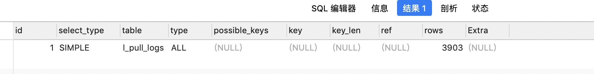

MySql提供了EXPLAIN语法用来进行查询分析，在SQL语句前加一个”EXPLAIN”即可。比如我们要分析如下SQL语句：
1 | explain select * from table where table.id = 1 |
运行上面的sql语句后你会看到，下面的表头信息：

id
Query Optimizer 所选定的执行计划中查询的序列号。select_type
所使用的查询类型，主要有以下这几种查询类型DEPENDENT SUBQUERY：子查询中内层的第一个SELECT，依赖于外部查询的结果集。DEPENDENT UNION：子查询中的UNION，且为UNION 中从第二个SELECT 开始的后面所有SELECT，同样依赖于外部查询的结果集。PRIMARY：子查询中的最外层查询，注意并不是主键查询。SIMPLE：除子查询或者UNION 之外的其他查询。SUBQUERY：子查询内层查询的第一个SELECT，结果不依赖于外部查询结果集。UNCACHEABLE SUBQUERY：结果集无法缓存的子查询。UNION：UNION 语句中第二个SELECT 开始的后面所有SELECT，第一个SELECT 为PRIMARYUNION RESULT：UNION 中的合并结果。
table表名type告诉我们对表所使用的访问方式，
all 全表扫描
index：全索引扫描。
range：索引范围扫描。
ref：Join 语句中被驱动表索引引用查询。从最好到最差的连接类型为
system > const > eq_ref > ref > fulltext > ref_or_null > index_mergeunique_subquery > index_subquery > range > index > ALL
一般来说，好的sql查询至少达到
range级别，最好能达到refpossible_keys显示可能应用在这张表中的索引。如果为空，没有可能的索引。可以为相关的域从WHERE语句中选择一个合适的语句key实际使用的索引。如果为NULL，则没有使用索引。很少的情况下，MYSQL会选择优化不足的索引。这种情况下，可以在SELECT语句中使用USE INDEX（indexname）来强制使用一个索引或者用IGNORE INDEX（indexname）来强制MYSQL忽略索引key_len使用的索引的长度。在不损失精确性的情况下，长度越短越好ref显示索引的哪一列被使用了，如果可能的话，是一个常数rowsMYSQL认为必须检查的用来返回请求数据的行数Extra关于MYSQL如何解析查询的额外信息。 可能取值如下- Distinct：查找distinct 值，所以当mysql 找到了第一条匹配的结果后，将停止该值的查询而转为后面其他值的查询。
- Full scan on NULL key：子查询中的一种优化方式，主要在遇到无法通过索引访问null值的使用使用。
- Impossible WHERE noticed after reading const tables：MySQL Query Optimizer 通过收集到的统计信息判断出不可能存在结果。
- No tables：Query 语句中使用FROM DUAL 或者不包含任何FROM 子句。
- Not exists：在某些左连接中MySQL Query Optimizer 所通过改变原有Query 的组成而使用的优化方法，可以部分减少数据访问次数。
- Range checked for each record (index map: N)：通过MySQL 官方手册的描述，当MySQL Query Optimizer 没有发现好的可以使用的索引的时候，如果发现如果来自前面的表的列值已知，可能部分索引可以使用。对前面的表的每个行组合，MySQL 检查是否可以使用range 或index_merge 访问方法来索取行。
- Select tables optimized away：当我们使用某些聚合函数来访问存在索引的某个字段的时候，MySQL Query Optimizer 会通过索引而直接一次定位到所需的数据行完成整个查询。当然，前提是在Query 中不能有GROUP BY 操作。如使用MIN()或者MAX（）的时候。
- Using filesort：当我们的Query 中包含ORDER BY 操作，而且无法利用索引完成排序操作的时候，MySQL Query Optimizer 不得不选择相应的排序算法来实现。
Using index：所需要的数据只需要在Index 即可全部获得而不需要再到表中取数据。Using index for group-by：数据访问和Using index 一样，所需数据只需要读取索引即可，而当Query 中使用了GROUP BY 或者DISTINCT 子句的时候，如果分组字段也在索引中，Extra 中的信息就会是Using index for group-by。Using temporary：当MySQL 在某些操作中必须使用临时表的时候，在Extra 信息中就会出现Using temporary 。主要常见于GROUP BY 和ORDER BY 等操作中。Using where：如果我们不是读取表的所有数据，或者不是仅仅通过索引就可以获取所有需要的数据，则会出现Using where 信息。- Using where with pushed condition：这是一个仅仅在NDBCluster 存储引擎中才会出现的信息，而且还需要通过打开Condition Pushdown 优化功能才可能会被使用。控制参数为engine_condition_pushdown 。